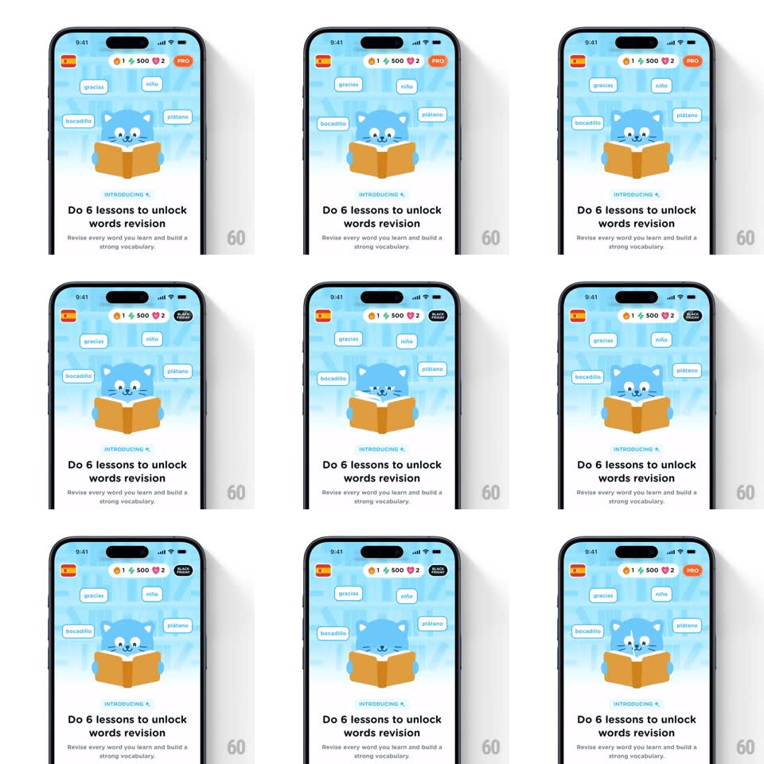

Media
Frame-by-frame

Rebuild this interaction 1:1: Airlearn's promo pill in the top stats bar - the pill flips vertically on its X-axis to alternate between "PRO" and "BLACK FRIDAY" labels, while the rest of the header and the mascot hero below stay static.

Rebuild this interaction 1:1: Airlearn's promo pill in the top stats bar - the pill flips vertically on its X-axis to alternate between "PRO" and "BLACK FRIDAY" labels, while the rest of the header and the mascot hero below stay static.
## Integration
Integration: stack-agnostic spec - springs given as stiffness/damping, timed motions as duration + curve; map every value to your framework and animation library of choice.
## Scene
Mobile screen: stats bar with flame (1), gems (500), hearts (2), and at the right a dark pill badge. Below, a promo hero with the blue cat reading a book, floating word chips ("gracias", "niño", "bocadillo", "plátano"), "INTRODUCING" eyebrow, and the headline "Do 6 lessons to unlock words revision".
## Motion spec
Pattern: periodic text flip inside a fixed pill container.
- The pill holds "PRO" (orange/red fill, white text) for ~2s.
- The pill's content rotates on the X-axis (rotateX 0 -> -90, old text rolls out top; new text "BLACK FRIDAY" rolls in from the bottom, ~400ms, ease-in-out), showing a black fill with white text and a small tag icon.
- Holds "BLACK FRIDAY" ~2s, then flips back to "PRO". Loop repeats.
- The pill container itself does not change size; only the face content rotates.
## Calibration
- The flip is a clean half-rotation of the text face - no scale, no slide of the whole pill.
- Timing is periodic and unhurried; roughly 2s hold per face.
## Reduced motion
Crossfade between the two labels (200ms), same hold timing, no 3D flip.
## Don't miss
- Two different pill color schemes: PRO is orange/red, BLACK FRIDAY is black.
- The flip axis is horizontal (text rolls vertically), not a Y-axis card spin.